Color is the FreeSurfer label on the still scan of sub-016504. The number is the still-scan index, so the same filename in every subject folder is this plane. On your slice screenshots the white surface is blue and the pial surface is red. Caudate and hippocampus are not outlined there.
The whole cortical ribbon. The medial wall is not included. Sample a dorsal, a mid, and a ventral slice rather than one gyrus.
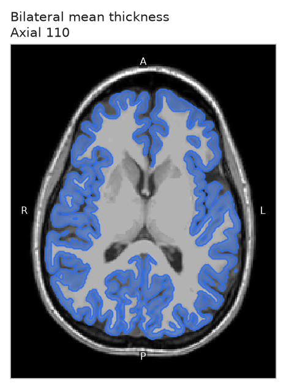
axial_110.png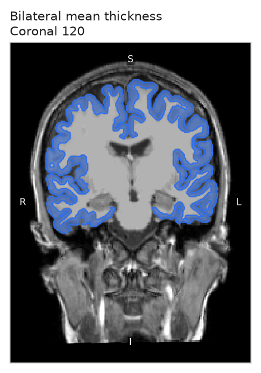
coronal_120.png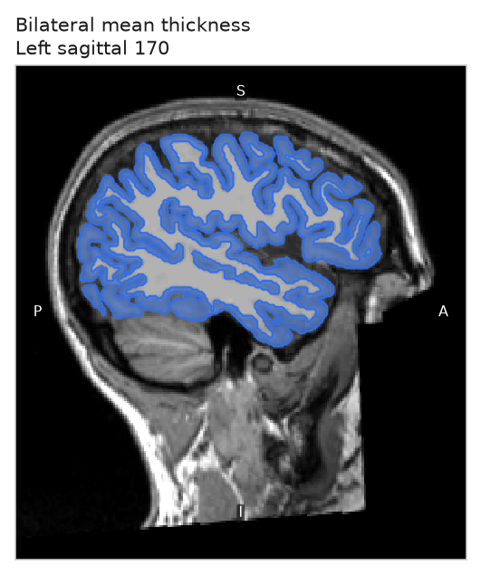
sagittal_170.png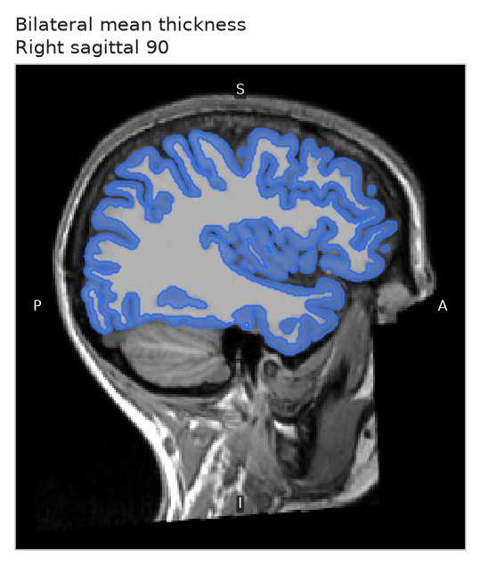
sagittal_90.pngLateral frontal cortex, above the Sylvian fissure and behind the frontal pole. On the axial slice it is the anterior-lateral ribbon.
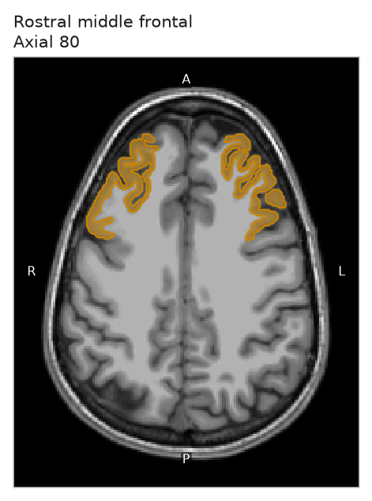
axial_80.png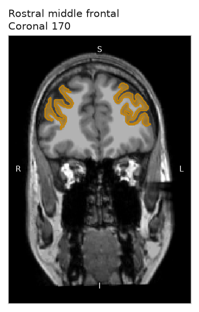
coronal_170.png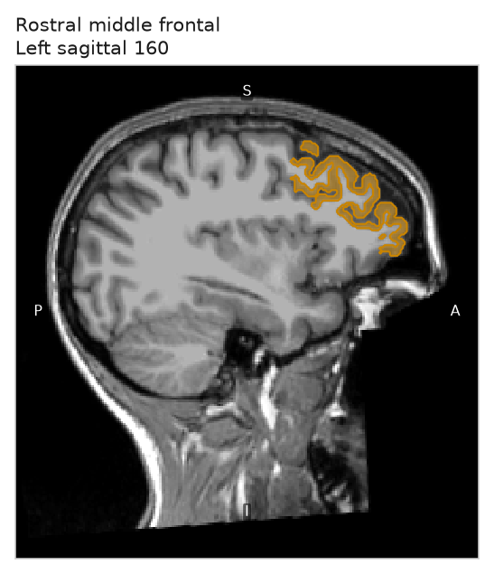
sagittal_160.png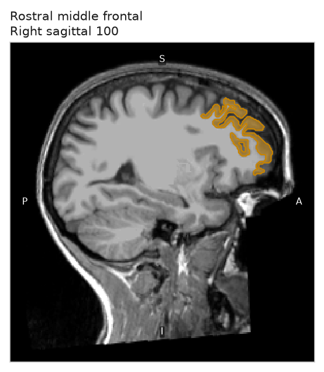
sagittal_100.pngLateral temporal gyrus along the Sylvian fissure. The sagittal slices are the far-lateral ones that still contain brain.
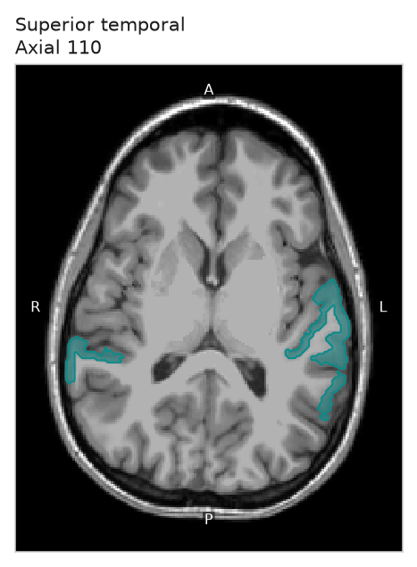
axial_110.png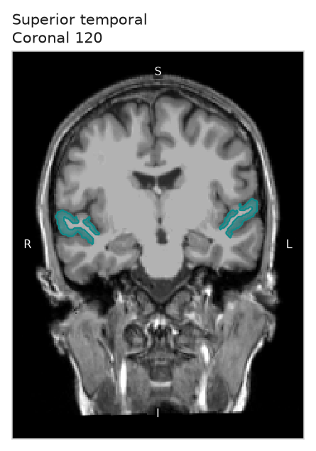
coronal_120.png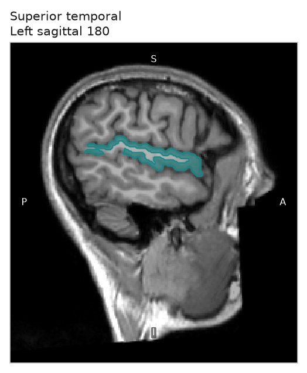
sagittal_180.png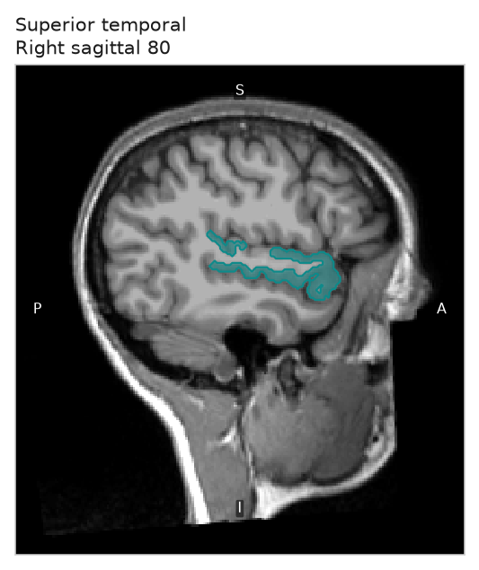
sagittal_80.pngAnterior tip of the temporal lobe, beside the orbits. On the axial slice the cerebellum is the folded tissue toward the bottom, and it is not the pole.
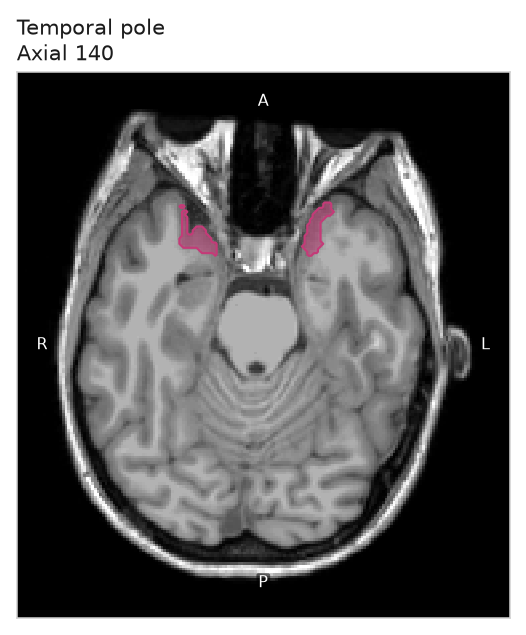
axial_140.png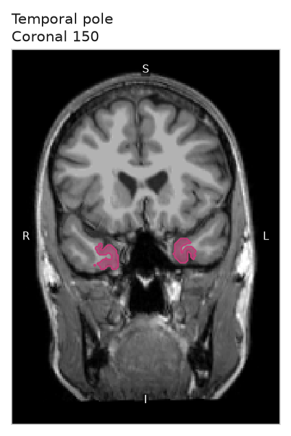
coronal_150.png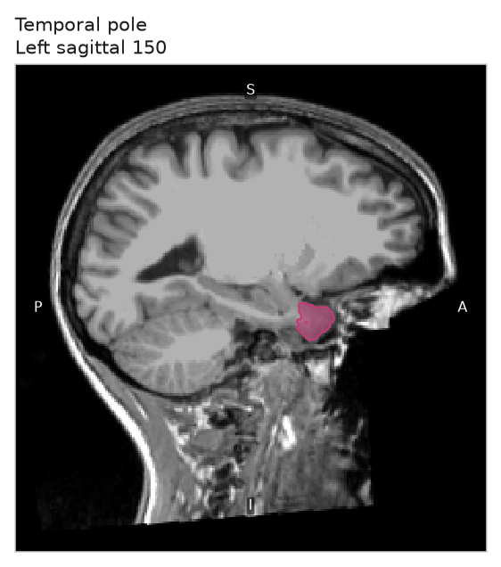
sagittal_150.png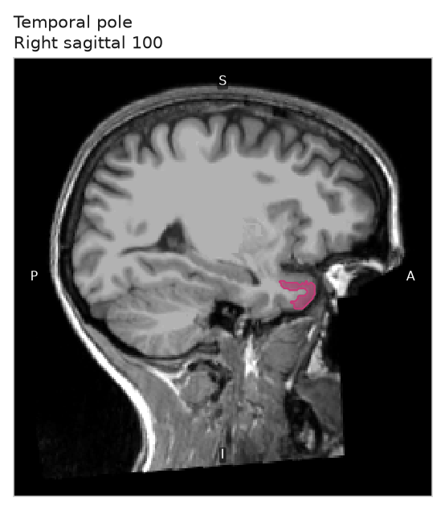
sagittal_100.pngGray bulge in the lateral wall of the frontal horn. On the axial slice the head is the larger mass beside the frontal horn; the smaller spot behind it is the body.
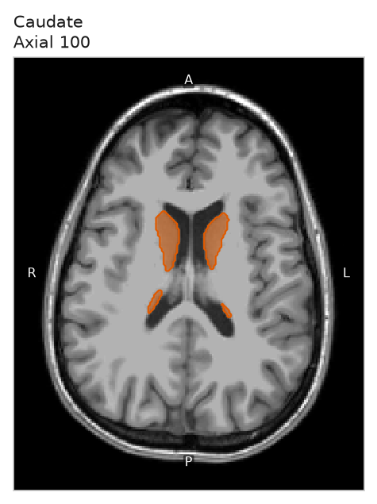
axial_100.png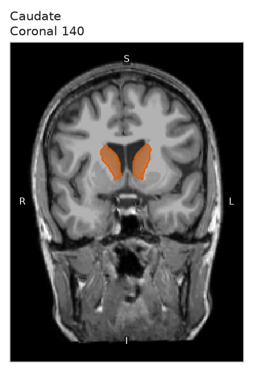
coronal_140.png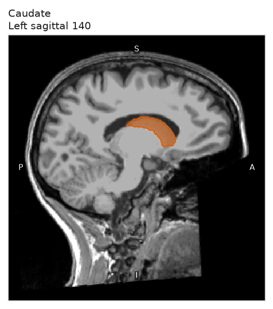
sagittal_140.png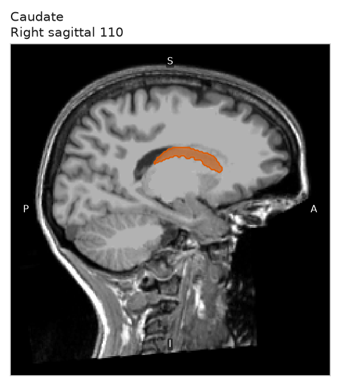
sagittal_110.pngMedial temporal gray under the choroid fissure, behind the temporal pole. If axial 130 is a thin cut in another subject, also open axial 120.
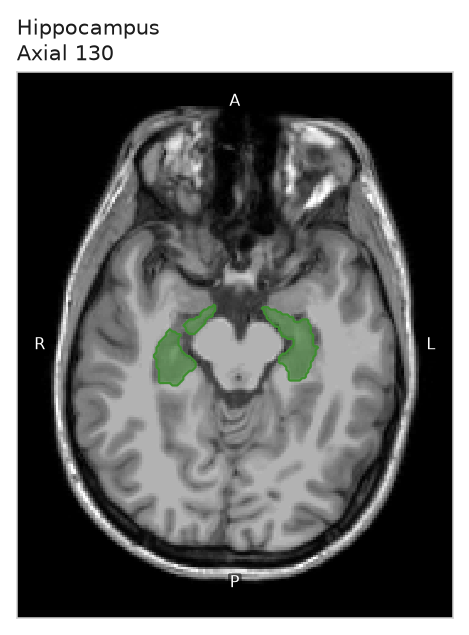
axial_130.png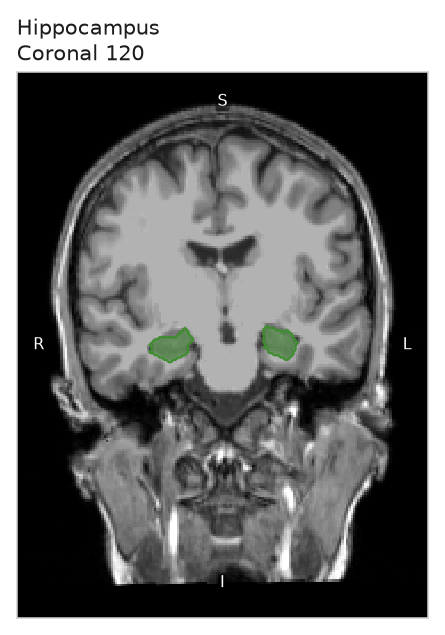
coronal_120.png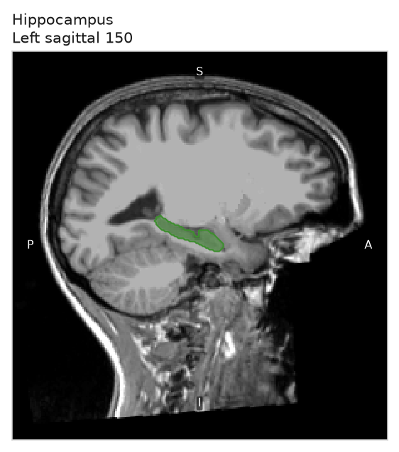
sagittal_150.png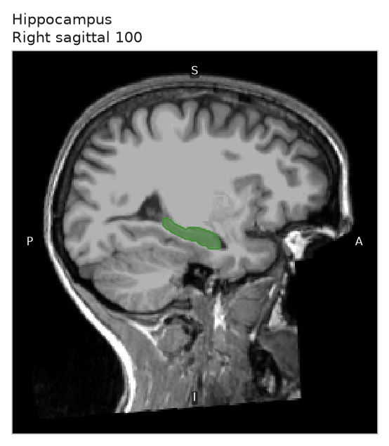
sagittal_100.png